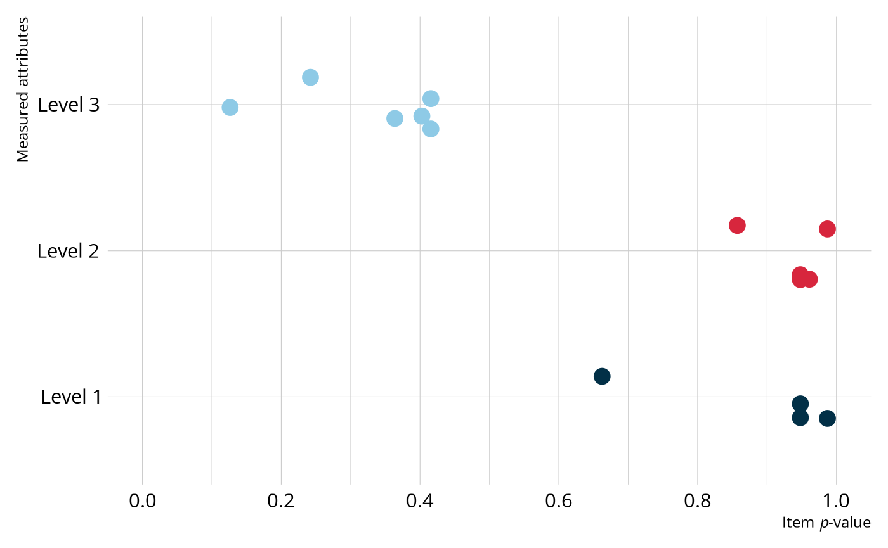
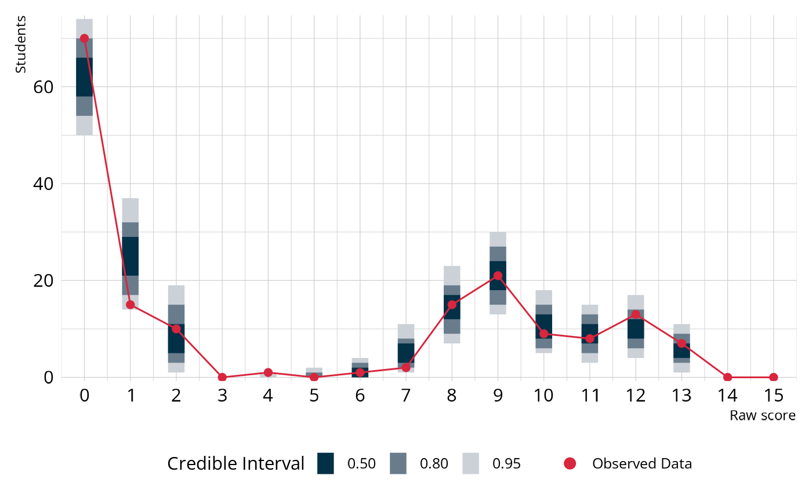
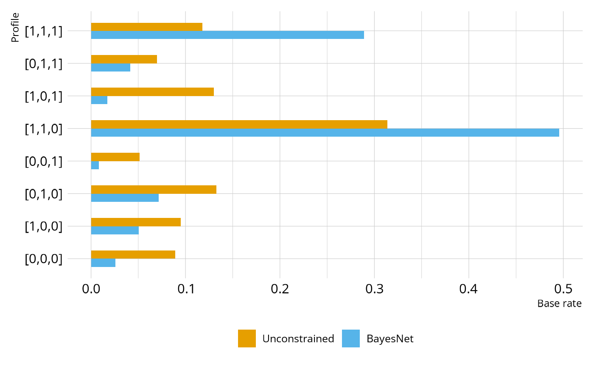

A diagnostic assessment case study
Develop a diagnostic model using best practices.
Introduction
Each of the previous Get Started articles has focused on introducing one component of analyzing data using diagnostic classification models (DCMs). In this article we’ll combine everything we’ve learned to explore a data set and answer substantive questions.
To use code in this article, you will need to install the following packages: dcmdata, measr, and rstan.
Pathways for Instructionally Embedded Assessment (PIE) data
We’ll use data from the Pathways for Instructionally Embedded Assessment (PIE; Accessible Teaching, Learning, and Assessment Systems, 2025) field test to explore attribute hierarchies. The PIE field test data is available in dcmdata, and contains responses to 15 items from 172 students.
pie_ft_data
#> # A tibble: 172 × 16
#> student `00592` `14415` `56400` `64967` `06238` `10231` `54596` `96748`
#> <chr> <int> <int> <int> <int> <int> <int> <int> <int>
#> 1 8978593 1 1 1 1 1 0 1 1
#> 2 5231294 1 1 1 1 1 1 1 1
#> 3 3681220 1 1 1 1 1 1 1 1
#> 4 7763384 1 0 1 1 1 1 1 1
#> 5 1913897 1 1 1 1 1 1 1 1
#> 6 0692477 1 1 1 1 1 1 1 1
#> 7 6961042 1 1 0 1 1 1 1 1
#> 8 4241777 1 1 1 1 1 1 1 1
#> 9 3068583 1 1 1 1 1 1 1 1
#> 10 6607413 1 1 1 1 1 1 1 1
#> # ℹ 162 more rows
#> # ℹ 7 more variables: `97634` <int>, `13080` <int>, `27971` <int>,
#> # `56741` <int>, `63088` <int>, `81175` <int>, `88063` <int>The corresponding Q-matrix maps each item three attributes. The three attributes represent successive levels along a Grade 5 mathematics learning pathway for repeating and numeric patterns (Kim et al., 2024). Level 1 (L1) skills relate to recognizing the order of elements in a repeating pattern. Level 2 (L2) skills represent organizing two numeric patterns in a table. Level 3 (L3) skills are the ability to translate two numeric patterns into ordered pairs and represent the learning target for this pathway.
pie_ft_qmatrix
#> # A tibble: 15 × 4
#> task L1 L2 L3
#> <chr> <int> <int> <int>
#> 1 00592 1 0 0
#> 2 14415 1 0 0
#> 3 56400 1 0 0
#> 4 64967 1 0 0
#> 5 06238 0 1 0
#> 6 10231 0 1 0
#> 7 54596 0 1 0
#> 8 96748 0 1 0
#> 9 97634 0 1 0
#> 10 13080 0 0 1
#> 11 27971 0 0 1
#> 12 56741 0 0 1
#> 13 63088 0 0 1
#> 14 81175 0 0 1
#> 15 88063 0 0 1These skills develop in a natural order: you need to recognize pattern structure before you can organize patterns in a table, and organizing them in a table precedes translating them into coordinate pairs. This gives us a clear linear progression: L1 -> L2 -> L3. For more information on the data set, see ?pie and Accessible Teaching, Learning, and Assessment Systems (2025).
For a quick summary of the data, we can calculate the proportion of students that answered each question correctly (i.e., the item p-values).
library(tidyverse)
pie_ft_data |>
summarize(across(-student, \(x) mean(x, na.rm = TRUE))) |>
pivot_longer(everything(), names_to = "task", values_to = "pvalue")
#> # A tibble: 15 × 2
#> task pvalue
#> <chr> <dbl>
#> 1 00592 0.987
#> 2 14415 0.948
#> 3 56400 0.662
#> 4 64967 0.948
#> 5 06238 0.948
#> 6 10231 0.948
#> 7 54596 0.961
#> 8 96748 0.857
#> 9 97634 0.987
#> 10 13080 0.364
#> 11 27971 0.416
#> 12 56741 0.403
#> 13 63088 0.416
#> 14 81175 0.242
#> 15 88063 0.126We can then join the item p-values with the Q-matrix to get a sense of which attributes are the most difficult. Overall, most of the Level 1 and Level 2 items have relatively high p-values, with most items having a p-value greater than .8, whereas the Level 3 items appear more difficult, with all Level 3 p-values less than .5.
Plot code
pie_ft_data |>
summarize(across(-student, \(x) mean(x, na.rm = TRUE))) |>
pivot_longer(everything(), names_to = "task", values_to = "pvalue") |>
left_join(pie_ft_qmatrix, join_by(task)) |>
pivot_longer(
c(L1, L2, L3),
names_to = "attribute",
values_to = "measured"
) |>
filter(measured == 1) |>
summarize(
measures = paste(str_to_title(attribute), collapse = "/\n"),
.by = c(task, pvalue)
) |>
mutate(
measures = factor(
measures,
levels = c("L1", "L2", "L3"),
labels = c("Level 1", "Level 2", "Level 3")
)
) |>
ggplot(aes(x = pvalue, y = measures)) +
geom_point(
aes(color = measures),
position = position_jitter(height = 0.2, width = 0, seed = 1213),
size = 4,
show.legend = FALSE
) +
scale_color_manual(
values = c("#023047", "#D7263D", "#8ECAE6", "#219EBC", "#F3D3BD", "#000000")
) +
expand_limits(x = c(0, 1)) +
scale_x_continuous(breaks = seq(0, 1, 0.2)) +
labs(x = "Item *p*-value", y = "Measured attributes")
Model estimation
Now that we have a feel for our data, we will estimate a DCM. As we saw in Specify a Diagnostic Model, we can create a DCM specification with dcm_specify(). We’ll start by estimating a loglinear cognitive diagnostic model (LCDM) with an unconstrained structural model. The LCDM is a general diagnostic model that allows for different attribute relationships on items (e.g., compensatory, non-compensatory) and subsumes many other types of DCMs (Henson et al., 2009; Henson & Templin, 2019). The unconstrained structural model places no constraints on the attribute relationships. Our theory indicates that there is a linear progression among the attributes, but it’s not a bad idea to start with fewer contrains and work our down to a simpler model.
As in the Evaluate Model Performance article, we want to estimate the model using MCMC so that we have the full range of model fit methods available to us. We can customize how the MCMC process is executed with rstan. For this example, we specified 4 chains, each with 2,000 warmup iterations and 500 retained iterations for 2,500 iterations total. This results in a total posterior distribution of 2,000 samples for each parameter (i.e., 500 iterations from each of the 4 chains).
lcdm_spec <- dcm_specify(
qmatrix = pie_ft_qmatrix,
identifier = "task",
measurement_model = lcdm(),
structural_model = unconstrained()
)
pie_lcdm <- dcm_estimate(
lcdm_spec,
data = pie_ft_data,
identifier = "student",
method = "mcmc",
backend = "rstan",
chains = 4,
iter = 2500,
warmup = 2000,
file = here::here("start", "fits", "pie-lcdm-uncst-rstn")
)Now that we’ve estimated a model, let’s examine the output. There are three types of information we’ll examine: structural parameters, item parameters, and student proficiency.
Structural parameters
The structural parameters define the base rate of membership in each of attribute profiles. Because the PIE data consists of 3 dichotomous attributes, there are a total of 23 = 8 possible profiles, or classes. We can view the possible profiles using measr_extract(), which extracts different aspects of a model estimated with measr. The order of the attributes in the profiles corresponds to the order the attributes were listed in the Q-matrix used to estimate the model. This means that attributes 1, 2, and 3 correspond to morphosyntactic, cohesive, and lexical rules, respectively.
ecpe_classes <- measr_extract(pie_lcdm, "classes")
ecpe_classes
#> # A tibble: 8 × 4
#> class L1 L2 L3
#> <chr> <int> <int> <int>
#> 1 [0,0,0] 0 0 0
#> 2 [1,0,0] 1 0 0
#> 3 [0,1,0] 0 1 0
#> 4 [0,0,1] 0 0 1
#> 5 [1,1,0] 1 1 0
#> 6 [1,0,1] 1 0 1
#> 7 [0,1,1] 0 1 1
#> 8 [1,1,1] 1 1 1We can also extract the estimated structural parameters themselves using measr_extract(). For structural parameters, we see the class, or the attribute profile, and the estimated proportion of students in that class with a measure of error (the standard deviation of the posterior). For example, nearly 9% of students are estimated to not be proficient on any of the pathway levels (class 1), and 31% are estimated to proficient on just pathway levels 1 and 2 (class 5).
Also note that some classes
structural_parameters <- measr_extract(pie_lcdm, "strc_param")
structural_parameters
#> # A tibble: 8 × 5
#> class L1 L2 L3 estimate
#> <chr> <int> <int> <int> <rvar[1d]>
#> 1 [0,0,0] 0 0 0 0.089 ± 0.066
#> 2 [1,0,0] 1 0 0 0.095 ± 0.082
#> 3 [0,1,0] 0 1 0 0.133 ± 0.107
#> 4 [0,0,1] 0 0 1 0.051 ± 0.047
#> 5 [1,1,0] 1 1 0 0.314 ± 0.134
#> 6 [1,0,1] 1 0 1 0.130 ± 0.078
#> 7 [0,1,1] 0 1 1 0.070 ± 0.058
#> 8 [1,1,1] 1 1 1 0.118 ± 0.078Item parameters
The item parameters define the log-odds of a student in each class providing a correct response. We can again extract our estimated item parameters using measr_extract(). Here, the estimate column reports estimated value for each parameter and a measure of the associated error (i.e., the standard deviation of the posterior distribution). For example, task 00592 has two parameters, as it measures two attributes:
- An intercept, which represents the log-odds of providing a correct response for a student who is not proficient on the attribute this item measures (i.e., Level 1).
- A main effect for Level 1 skills, which represents the increase in the log-odds of providing a correct response for a student who is proficient on that attribute.
item_parameters <- measr_extract(pie_lcdm, what = "item_param")
item_parameters
#> # A tibble: 30 × 5
#> task type attributes coefficient estimate
#> <chr> <chr> <chr> <chr> <rvar[1d]>
#> 1 00592 intercept <NA> l1_0 3.07 ± 0.98
#> 2 00592 maineffect L1 l1_11 2.78 ± 2.94
#> 3 14415 intercept <NA> l2_0 1.80 ± 0.91
#> 4 14415 maineffect L1 l2_11 3.03 ± 2.92
#> 5 56400 intercept <NA> l3_0 -0.36 ± 0.87
#> 6 56400 maineffect L1 l3_11 1.89 ± 1.77
#> 7 64967 intercept <NA> l4_0 1.94 ± 0.79
#> 8 64967 maineffect L1 l4_11 2.49 ± 2.53
#> 9 06238 intercept <NA> l5_0 2.25 ± 0.70
#> 10 06238 maineffect L2 l5_12 1.55 ± 1.92
#> # ℹ 20 more rowsModel evaluation
A fully Bayesian estimation allows us to evaluate model fit using posterior predictive model checks (PPMCs). Specifically, measr supports a PPMC of the overall raw score distribution as described by Park et al. (2015) and Thompson (2019). For each of the replicated data sets, we calculate the number of students with each raw score (i.e., the number of correct responses). This can be done using fit_ppmc().
fit_ppmc(pie_lcdm, model_fit = "raw_score")
#> $ppmc_raw_score
#> # A tibble: 1 × 5
#> obs_chisq ppmc_mean `2.5%` `97.5%` ppp
#> <dbl> <dbl> <dbl> <dbl> <dbl>
#> 1 36.9 17.1 4.80 41.9 0.0455In the output, the posterior predictive p-value (ppp) is small (<.05), indicating poor fit. To unpack what this really means, let’s visualize the PPMC. In the following figure, the blue bars show the credible intervals for the number of students we would expect to see at each raw score point, given our estimated model parameters. The red dots and line indicate the number of students that were observed at each raw score point in our observed data (pie_ft_data). For example, the model expects there to be between about 0 and 20 students with a total score of 7. In the observed data, there were 2 students with a total score of 7. In general, the model does a fairly good job of capturing the observed data. However, there are several places where the observed values fall close to the edge of the expected distribution. So even though the model doesn’t miss anywhere by a lot, the accumulation of small misses leads to poor fit.
Plot code
library(ggdist)
obs_scores <- pie_ft_data |>
pivot_longer(cols = -"student") |>
summarize(raw_score = sum(value, na.rm = TRUE), .by = student) |>
count(raw_score) |>
complete(raw_score = 0:15, fill = list(n = 0L))
fit_ppmc(pie_lcdm, model_fit = "raw_score", return_draws = 2000) |>
pluck("ppmc_raw_score") |>
select(rawscore_samples) |>
unnest(rawscore_samples) |>
unnest(raw_scores) |>
ggplot() +
stat_interval(
aes(x = raw_score, y = n, color_ramp = after_stat(level)),
point_interval = "mean_qi",
color = msr_colors[2],
linewidth = 5,
show.legend = c(color = FALSE)
) +
geom_line(
data = obs_scores,
aes(x = raw_score, y = n),
color = msr_colors[3]
) +
geom_point(
data = obs_scores,
aes(x = raw_score, y = n, fill = "Observed Data"),
shape = 21,
color = msr_colors[3],
size = 2
) +
scale_color_ramp_discrete(
from = "white",
range = c(0.2, 1),
breaks = c(0.5, 0.8, 0.95),
labels = ~ sprintf("%0.2f", as.numeric(.x))
) +
scale_fill_manual(values = c(msr_colors[3])) +
scale_x_continuous(breaks = seq(0, 15, 1), expand = c(0, 0)) +
scale_y_comma() +
labs(
x = "Raw score",
y = "Students",
color_ramp = "Credible Interval",
fill = NULL
) +
guides(fill = guide_legend(override.aes = list(size = 3)))
In summary, the raw score PPMC indicates poor fit of our estimated LCDM to the observed data. This is not unexpected, given that some classes are very small. Recall from our discussion of the estimated structural parameters that there are three classes that combine to include less than 4% of all students. When classes are this small, parameter estimates can be unstable, leading to poor model fit (e.g., Templin & Bradshaw, 2014; Wang & Lu, 2021).
Adding attribute structure
Model fit can often occur if there are small classes, causing parameter estimates to be unstable (e.g., Templin & Bradshaw, 2014; Wang & Lu, 2021). In our LCDM model, there are class that have small base rate estimates, and which are also inconsistent with the ordering of the levels in the learning pathway. For example, classes [0,0,1] and [0,1,1] have relatively low base rates and represent profiles where students are proficient on Levels 2 and/or 3 without first demonstrating proficiency of Level 1.
structural_parameters
#> # A tibble: 8 × 5
#> class L1 L2 L3 estimate
#> <chr> <int> <int> <int> <rvar[1d]>
#> 1 [0,0,0] 0 0 0 0.089 ± 0.066
#> 2 [1,0,0] 1 0 0 0.095 ± 0.082
#> 3 [0,1,0] 0 1 0 0.133 ± 0.107
#> 4 [0,0,1] 0 0 1 0.051 ± 0.047
#> 5 [1,1,0] 1 1 0 0.314 ± 0.134
#> 6 [1,0,1] 1 0 1 0.130 ± 0.078
#> 7 [0,1,1] 0 1 1 0.070 ± 0.058
#> 8 [1,1,1] 1 1 1 0.118 ± 0.078We can estimate a new model that encodes our proposed hierarchy. Specifically, we’ll estimate a model that uses a Bayesian Network for the structural model. As we discussed in the Define Attribute Relationships article, the BayesNet puts soft constraints on the possible profiles. All profiles are still allowed, but students are pushed toward the profiles that are consistent with our proposed linear hierarchy of the pathway levels.
bayesnet_spec <- dcm_specify(
qmatrix = pie_ft_qmatrix,
identifier = "task",
measurement_model = lcdm(),
structural_model = bayesnet("L1 -> L2 -> L3")
)
pie_bayesnet <- dcm_estimate(
bayesnet_spec,
data = pie_ft_data,
identifier = "student",
method = "mcmc",
backend = "rstan",
chains = 4,
iter = 2500,
warmup = 2000,
file = here::here("start", "fits", "pie-lcdm-bayesnet-rstn")
)Figure 3 shows the estimated base rates of each profile under the original unconstrained and BayesNet model. As expected, we see fewer students in the unexpected profiles (e.g., [0,1,0], [0,0,1]) and more students in profiles [1,1,0] and [1,1,1].
Plot code
bind_rows(
structural_parameters |>
mutate(estimate = E(estimate), model = "Unconstrained") |>
select(model, class, estimate),
measr_extract(pie_bayesnet, "strc_param") |>
mutate(estimate = E(estimate), model = "BayesNet") |>
select(model, class, estimate)
) |>
mutate(class = fct_inorder(class)) |>
ggplot(aes(x = estimate, y = class)) +
geom_col(aes(fill = model), position = position_dodge(), width = 0.5) +
scale_fill_okabeito(limits = c("Unconstrained", "BayesNet")) +
labs(x = "Base rate", y = "Profile", fill = NULL)
Structure evaluation
Let’s see how the new structural model has affected model fit. We’ll once again check the raw score PPMC. With the BayesNet structural model, we see much better fit, with a ppp value of 0.232.
fit_ppmc(pie_bayesnet, model_fit = "raw_score")
#> $ppmc_raw_score
#> # A tibble: 1 × 5
#> obs_chisq ppmc_mean `2.5%` `97.5%` ppp
#> <dbl> <dbl> <dbl> <dbl> <dbl>
#> 1 20.2 16.8 4.87 54.6 0.232We can also use model comparisons and leave-one-out cross validation (LOO) to evaluate the hierarchy imposed by the BayesNet. Here, we see that the BayesNet is the preferred model, although the difference between the models is negligible. This is what we would hope to see. Imposing the hierarchy has not hurt model fit, and the fewer parameters of the BayesNet makes it preferred.
loo_compare(pie_lcdm, pie_bayesnet)
#> elpd_diff se_diff
#> pie_bayesnet 0.0 0.0
#> pie_lcdm -1.7 1.4Finally, we can also examine classification reliability for the BayesNet model. Under the BayesNet hierarchy, all three pathway levels have high levels of both classification accuracy and consistency, indicating that we can have confidence in the classifications made by the model.
measr_extract(pie_bayesnet, "classification_reliability")
#> # A tibble: 3 × 3
#> attribute accuracy consistency
#> <chr> <dbl> <dbl>
#> 1 L1 0.868 0.971
#> 2 L2 0.906 0.981
#> 3 L3 0.924 0.864Wrapping up
In this case study, we estimated an LCDM to analyze the PIE field test data. From the model evalution, we saw that model fit indices indicated that the LCDM does not do a great job of representing the observed data. This was likely due to dependencies among the attributes that were ignored by the unconstrained structural model. To address this issue, we fit another model where the stuctural model was parameterized as a Bayesian Network with a defined linear hierarchy of the pathway levels. The model with the BayesNet structural model showed improved absolute model fit, was the preferred model by the LOO, and demonstrated high levels of classification accuracy and consistency. Thus, we have strong technical evidence that this model would be sufficient for reporting student proficiency on the measured attributes.
Session information
#> ─ Session info ─────────────────────────────────────────────────────
#> version R version 4.5.2 (2025-10-31)
#> language (EN)
#> date 2026-04-04
#> pandoc 3.9
#> quarto 1.9.24
#> Stan (rstan) 2.37.0
#>
#> ─ Packages ─────────────────────────────────────────────────────────
#> package version date (UTC) source
#> bridgesampling 1.2-1 2025-11-19 CRAN (R 4.5.2)
#> dcmdata 0.2.0 2026-03-10 CRAN (R 4.5.2)
#> dcmstan 0.1.0 2025-11-24 CRAN (R 4.5.2)
#> dplyr 1.2.0 2026-02-03 CRAN (R 4.5.2)
#> forcats 1.0.1 2025-09-25 CRAN (R 4.5.0)
#> ggplot2 4.0.2 2026-02-03 CRAN (R 4.5.2)
#> loo 2.9.0.9000 2025-12-30 https://stan-dev.r-universe.dev (R 4.5.2)
#> lubridate 1.9.5 2026-02-04 CRAN (R 4.5.2)
#> measr 2.0.0.9000 2026-03-21 Github (r-dcm/measr@475bc50)
#> posterior 1.6.1.9000 2025-12-30 https://stan-dev.r-universe.dev (R 4.5.2)
#> purrr 1.2.1 2026-01-09 CRAN (R 4.5.2)
#> readr 2.2.0 2026-02-19 CRAN (R 4.5.2)
#> rlang 1.1.7 2026-01-09 CRAN (R 4.5.2)
#> rstan 2.36.0.9000 2025-09-26 https://stan-dev.r-universe.dev (R 4.5.1)
#> stringr 1.6.0 2025-11-04 CRAN (R 4.5.0)
#> tibble 3.3.1 2026-01-11 CRAN (R 4.5.2)
#> tidyr 1.3.2 2025-12-19 CRAN (R 4.5.2)
#>
#> ────────────────────────────────────────────────────────────────────